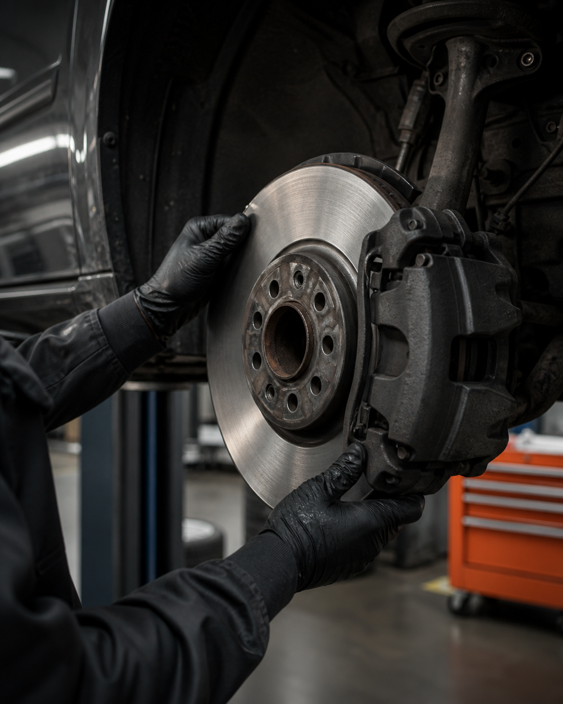

Auto repair · San DiegoReparación · San Diego
Keep the diagnosis honest.Un diagnóstico claro.
Auto repair, brake work, diagnostics, engine and transmission service, plus Star smog checks at the El Cajon Boulevard shop.Reparación de autos, frenos, diagnósticos, motor y transmisión, además de verificaciones Star smog en el taller de El Cajon Boulevard.
+Direct line · 619-299-6966Línea directa · 619-299-6966
01 / Diagnosis02 / Repair03 / Smog checkTP AUTO REPAIR
5.0Public ratingCalificación pública
2,748Google reviewsReseñas de Google
1984Serving San Diego sinceSirviendo San Diego desde
Published hoursHorario publicadoMON—FRI · 7:30—4:30

A clearer first conversationUna conversación más clara
Bring the real symptom. Start there.Traiga el síntoma real. Comience ahí.
A good repair conversation begins with what the vehicle is doing, not with a vague label. Share the sound, warning light, or change you noticed and call the shop directly.Una buena conversación comienza con lo que hace el vehículo, no con una etiqueta vaga. Comparta el sonido, la luz de advertencia o el cambio que notó y llame directamente al taller.
01Name the changeDescriba el cambioNoise, light, feel, or timing.Ruido, luz, sensación o momento.
02Talk through the systemHable del sistemaBrake, engine, transmission, or smog.Frenos, motor, transmisión o smog.
03Choose the next moveElija el siguiente pasoLeave with a clearer question.Salga con una pregunta más clara.
The work / six published linesEl trabajo / seis servicios
Services, named plainly.Servicios, con nombres claros.
Review the published service lines, then call 619-299-6966 to discuss the specific job.Revise los servicios publicados y llame al 619-299-6966 para hablar de su vehículo.
Verified at a glanceVerificado de un vistazo
The useful facts, up front.Los datos útiles, al frente.
A public record should help you decide whether to make the call.Un registro público debe ayudarle a decidir si llamar.
San Diego, CA 92104Published shop address
The shop / North ParkEl taller / North Park
Bring the real job.Traiga el trabajo real.
Call T P Auto Repair to talk through the vehicle and the next practical step.Llame a T P Auto Repair para hablar del vehículo y del siguiente paso.
Call 619-299-6966Llame al 619-299-6966Before the callAntes de llamar
Useful questions.Preguntas útiles.
For current availability or job-specific guidance, call the shop directly.Para disponibilidad o información específica, llame directamente al taller.
What services are listed?¿Qué servicios están publicados?+
Routine auto repair, brake repair, diagnostics, engine work, transmission service, and Star smog checks.Reparación general, frenos, diagnósticos, motor, transmisión y verificaciones Star smog.
Where is the shop?¿Dónde está el taller?+
2426 El Cajon Blvd, San Diego, CA 92104.
What are the published hours?¿Cuál es el horario publicado?+
Monday through Friday, 7:30 AM–4:30 PM. Saturday and Sunday are listed as closed.Lunes a viernes, 7:30 AM–4:30 PM. Sábado y domingo aparecen como cerrados.
Where can I verify the rating?¿Dónde verifico la calificación?+
Open the rating-source page to visit the public review profile used for this preview.Abra la página de fuente para visitar el perfil público usado para esta vista previa.
Start with the symptomComience con el síntoma